Blogs of my Development
After discussion in our group today, we decided to continue the game in the first semester and make the second level. The setting is set in a hospital. The division of labor is similar to that in the first semester. I will be responsible for the main program, logic and implementation mechanism.
In terms of mechanic implementation, many things can be used in the first level, such as maps, packs, energy. In this level, I need to complete the energy system and optimize some functions of the first level. I want to be different from the first level.
Before designing the game mechanics,
I first thought about what I wanted to continue to discuss and research in this game.
In the first level, I mainly explored how to design the right mechanics in such a game.
At this level, I want to go deeper, how much does the design of the mechanics affect the game, and how does it affect the main character?
How much does it affect the player's experience?
In addition, I learned the term immersion for the first time last semester, but many students, including me, were advised that immersion was not specific enough. So this time I want to understand what immersion is and how to improve the player's experience. Also, does the game have to deliver something? Most of the time, games are just a tool for people's entertainment, but the more I learn about them, the more I realize that games have a lot of functions and value.
First, the design and construction of the scene. Due to time constraints, we still used existing material for the scenes.
Today, I looked for the scene materials of the second level with my friends.
An official resource pack for Unreal Engine was found, but UE was not installed.
So I went to install UE and try to check the required hospital scene materials.
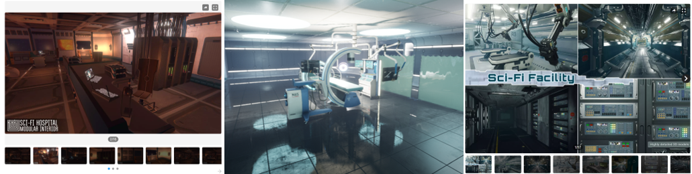
Today, I imported the scene into UE and found that all the material formats were in UE format, which could not be used directly. I preliminarily understood the operation mode of UE and exported the model, but there was no material for the FBX model. Then, I had to export each part individually and fill each material one by one in Unity. In addition, I learned some specific details of URP material in Unity, learned the meaning of exported “_AO”(ambient occlusion), “_R”(roughness), “_M”(metallic) and other texture formats, which could be fille into corresponding part of the URP material. I really learned something new. I was actually a bit confused about the material before.
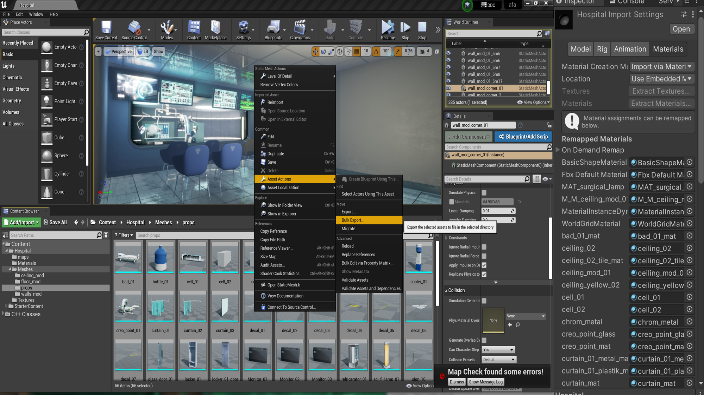
Today, we optimized the scene. Zhenyu added the hall of the hospital, AND I adjusted the material, lighting, post-processing, etc.The initial scenario is established.
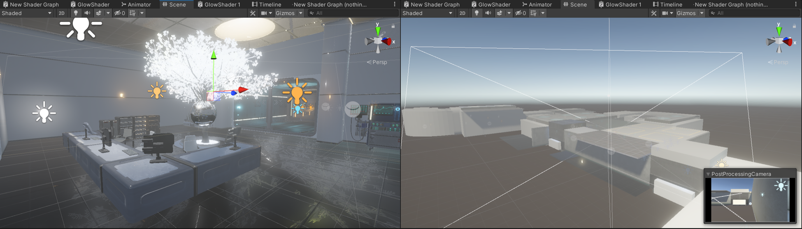
Today, I moved the main character to the game scene, as well as the UI. I found some difficulties in the code, because although the reuse of the code was considered in the first level, some temporary added codes could not be used due to the lack of consideration in the production, so it may take some time to modify or rewrite some codes in the second level development.
Specifically, in the backpack system made in the first level, some items are judged by tag and some by name, resulting in some inconsistent codes. At the same time, the code reuse of specific items in the first level is not high, which is the result of the lack of design in the early stage.
The scripts controlling the Bag system mainly concerns
Firstly I set tags for different props
For example:
//refers to the computer UI panel m_ComputerTag = "computer";//refers to the log objects in the scene m_PropTag = "Props";//refers to the cabinet which could be open m_WallCabinetTag = "wallcabinet"; .......
The input of Keycode.F is the interacting key, which almost controlls all the interactions. With triggered objects and interacting input, it goes to the function
Here is the important part. With the logic above, I could add more certain functions tageting different objects; More importantly, besides the backpack system, I also wrote other reusable functions. Actually, this behaviour is required.
For example:
InteractObjects() {//functions of level 1 if (m_Log) GetLogIntoBag(); if (m_WallCabinet) OpenOrCloseCabinet(); if (m_ComputerPanel) OpenComputer();//functions of level 2 if (m_Fashengqi ||m_Core) GetPartsIntoBag(); if (m_Flyr) SupplyEnergy(); if (m_PasswordPadPanel) OpenPasswordPad(); if (metalDoor&&!buttonPart) OperateMetalDoor(); if (buttonPart) GetButtonIntoBag(); if (m_Energy) GetEnergy(); }
After a few days of on-off modifications, the main features were mostly ported to the level 2 scene. With the preparation work completed, the next step is to set up the mechanism and consider the research problem. When making the first level, I paid more attention to the design of the mechanics, and actually I didn't think about the overall feeling of the game as a player. When I settled down to play the game, carefully read the log and listened to every robot voice, I felt I was truly immersed in the story and explored as Iron.
I started to think about the expressiveness of the game, whether we were communicating our ideas to the players. As an RPG, the game doesn't actually have the traditional RPG features, but is more about deciphering and exploration. So what is the progression of the game? So, I read about it and wanted to know the elements of an RPG. A basic definition of an RPG is usually a description of agency and experience. One of the things I was impressed profoundly is that Petterson (2006) calling RPGS art of Experience. In terms of giving the player a game experience, it is worth pondering whether the level of esthetics can be achieved.
Once by chance, I saw an article about Level system and character growth in RPG games, and the author gave a relatively accurate growth curve by referring to bloodo mathematical formula, which inspired me to explore the growth of characters. But there was a conflict point where I saw that our characters were not the traditional RPG human protagonists, so where did we grow? And that got me thinking. I found that growth is not just about upgrading and strengthening abilities, but also about the improvement and further shaping of character image, which is a gradual process.
Consequently, I wanted to ask the question, is there a difference between non-human RPGs and others? Are these games more about delivering fun or are they usually about delivering the unique meaning of the main character?
Overall, What makes an RPG Game with a Non-human Protagonist Distinct?
Our group further discussed the mechanism of the second level of the game, and determined the basic gameplay and main mechanism of our game. In addition, we refered to the game atmosphere and puzzling of Resident Evil Ⅱ.
The first is to design a mechanic for Iron's repair and care robot, which is still about finding parts, but requires the player to operate the operating table in the scene. And then again, energy harvesting, which is the core of our game.
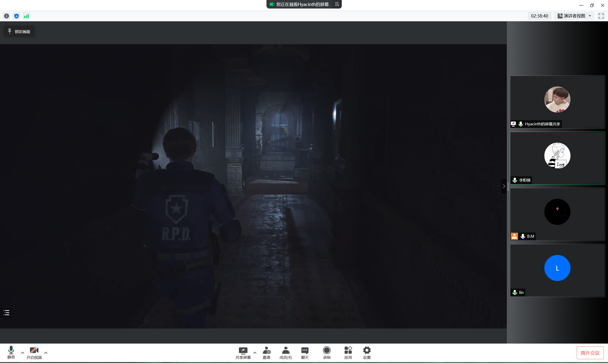
After the group discussion about mechanics, I suddenly got inspired on my research question. RPGS have a progression system, so in characters, which is called Character Progression. But in practice, few researchers have researched into this filed. The word Character Progression may first be proposed by Peterson (2012) in his discussion of Dungeons & Dragons mechanism.
Intruingly, "much of the literature on role-playing games (RPGs) focuses on their social, performative, experiential, and/or narrative aspects. The emphasis is on the playing of the roles, as it were, and less so on the game mechanics. Curiously, the phrase RPG elements tends not to refer to the role-playing aspects of the genre, but to the rules, systems, and mechanisms that have been co-opted by other game genres and gamification practitioners." By examining a single element: mechanisms and systems for Character Progression in RPGs we can unpack the term ‘RPG elements’.
This further inspired me to think about the research problem. The core of the question is not the genre, but what it carries.
The character progression attribute is represented by Iron, and one of the systems is the energy system. The player can gain energy by accomplishing missions and passing the level while risking death if losing it. This is a rewarding and punishment mechanic that drives the player to complete the quest.
In this level, I implemented the specific common function of energy.
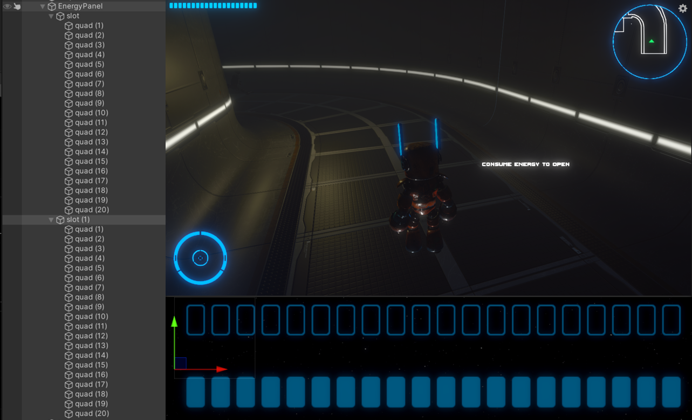Figure 1: UI of Energy
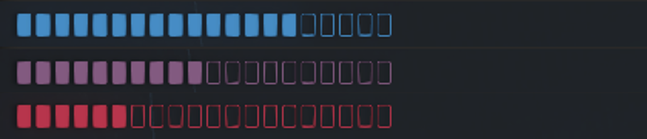Figure 2: the color changes with the units of energy

Figure 3: the bar flashes with little energy
IEnumerator CountDownBloodLosing() { while(true) { yield return new WaitForSeconds(m_LosingTime);LoseEnergy(); } }
Bellow is the script,
IEnumerator OnFading() { switch m_FadeType while(time<fadetime)) { image.color.dofade(fadedcolor) } reset time; while(time<fadetime)) { image.color.dofade(normalcolor) } }
The example could be:
Using DG.Tweening;
...
Class Name:
{
image.DOfade(endvalue,time);
}
The way our mechanics were set up, not only did energy decrease over time,
but some interactions in the game also caused energy to decrease.
When I was thinking about how to present this mechanic,
I realized that some seemingly meaningless mechanics could actually exist in the game,
such as making the player make choices.
"Inconsequential choices that do not notably affect the game result should be meaningful
because choices provide a sense of agency to the player."
(Nay & Zagal, 2017).
Such a view is quite unique. For most people, there are choices in games that lead to victory.
"Winning is a desirable action, whereas losing may lead to an increase in unpleasant emotional states."
(Dowsett & Jackson, 2019).
However, when we re-consider the meaning of the game, we find that many things that have nothing to do with winning,
such as the Easter eggs, hidden details, etc., are often the fun part of the player's experience.
And just as it's more dignified to write about it in a euphemistic way,
games that improve the plot with hard-to-find details, or challenge the mood of the player,
make for a great experience.
After reading through a lot of theories,
I got to understand for the first time the widespread use of the word Eudaimonia in the field of games
and how it is often used to evaluate a game. Games serve for the player,
so creating experiences is a must, and there seems to be no limit to the level of experience,
as if happiness will never peak, and games can continue to create more and more Eudaimonic experiences.
Eudaimonia incorporates four broad conceptual patterns
(Daneels et at., 2021)
:
(1) appreciation as an overarching (yet imprecise) eudaimonic outcome of playing digital games;
(2) covariation among meaningful, emotionally moving/challenging, and self-reflective experiences;
(3) the unique potential of digital games to afford eudaimonic social connectedness; and
(4) other eudaimonia-related concepts (e.g., nostalgia, well-being, elevation)
What experiences can we create for our players with regard to our games?
First of all, as a player, I think it's easy for players to empathize with Iron from the first level.
In order to strengthen this connection, we need to add more elements to support it in the second level.
According to our mechanics, energy, in addition to decreasing over time, can also be used to participate in interactions within the scene. But as mentioned earlier, we want to give the player choices, and avoid choices that tend to win. And that's actually what I did.
Every single room in the scene has a door, and each time the player opens the door, energy is consumed. However, having a room in it actually has no effect on the progress of the game. Such an empty space exists in most games, and it gives the player some space to explore (Figure 2). So, after entering an unhelpful room, the player might think twice before using energy to open the door.
In addition, In the design of opening the door, I also made a mechanism that gradually charged the door and then opened it. In such details, the game's progression system can be solid, with energy-deficient doors slowly opening only after they are fully charged. This is not only a interesting mechanic, but also a way to suppress the desire of some players to finish the game and make them feel more relaxed.

Figure 1: uses energy to charge the door and open it
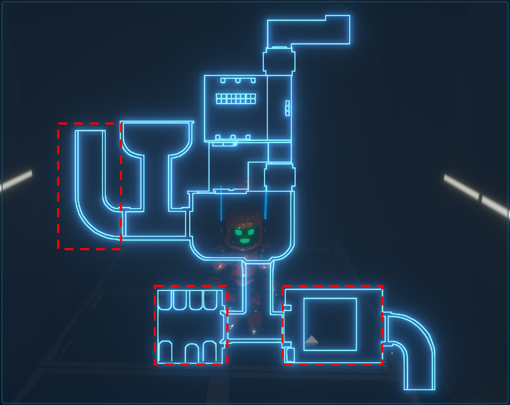Figure 2: empty rooms where the player could only explore
The exlusive script,
Before that, we should create a new shader to implement the demonstrated effect (Figure 1).
Figure 3: the shader graph of the door
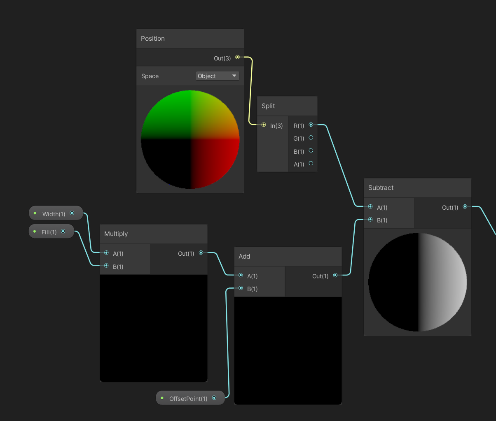Figure 4: the main logic of the shader
As shown in Figure 3 and4, to implement the effect that the emission fades out from the center, I mainly add an offset variable to the x axis of the emission picture. The reason for the x axis is based on the appearance of the door that the energy slots are distributed on the top center and the bottom center.
After making the shader, there is a vital step that I have never met since it is only a short time for me to learn shaders.
FillSlots() { ...//Very important to enablekeword, which I didnt know and spent a lot time on it. m_GlassDoorEmission.EnableKeyword("_EMISSION"); m_GlassDoorEmission.SetFloat("_Fill", 0); m_GlassDoorEmission.SetColor("_EnergyColor",Color.black); ... }OpenDoor() { ...//Here I using DOTween method which is very useful. transform.DOLocalMoveX(moveToPosX, time); ... }
There needs to be some freedom in the player's exploration, but at the same time the game should be guided so that the player doesn't lose passively. In order to prevent the player from being confused and unable to play the game smoothly due to wandering around using energy at random, I introduced a quest prompt system.
The quest system is something that most games have, especially if they have a story. I designed the mission system in places that required the player to do different things. It is very important for the content design to be vague and prompt, allowing the player to follow certain game logic while having freedom.
The appearance and dynamic effect of the mission system are based on the task prompt effect in Need for Speed 18 (Figure 1), which is displayed in the right middle of the interface in translucent gradient color, which not only prompts the mission, but also is very beautiful.
Figure 1: the Interface of Need of Speed 18, with the mission tips on the right side.

Figure 2: the Animation of the Prompting tips
With the level controller,
As Figure 3 illustrates, I set many triggers called "PlotTrigger" to help me record the current progress.
Figure 3: the Triggers in the Hierarchy
SecondLevelController.cs # Character Control # Level Control # Door Control # Cell Control # NursingRobot Control # Environment Control
As shown above, this script comprises almost all the mechanics of this level. Here I want to mainly introduce the logic of Level Control
PlotTriggerd() { switch Plot 1Plot01() // enter the hall 2Plot02() // meet the nursing robot 3Plot03() // chat with the nursing robot 4Plot04() // on the path to the room with cells 5Plot05() // enter the room with cells 6Plot06() // found the two parts and then talk with the robot 7Plot07() // go to fix the robot 8Plot08() // successfully fixed the robot 9Plot09() // talk with fixed robot 10Plot10() // collected two parts of the keypad 11Plot11() // collect the energy }
In order to facilitate the progress of the game, I added cutscenes to guide the player, mainly when they meet the nurse robot. In fact, taking such a shot animation is the best way to show the plot. Because if you let the player walk up to the NPC and choose whether or not to talk to the NPC, that's a little too much freedom.

Figure 1: the cutscene when Iron encounters the damaged nursing robot
Creating an atmosphere is essential to enhance the player's experience. When people focus on a game's mechanics, they tend to focus on its sound, scenery, and graphics. While some non-essential elements, such as graphics quality, are not the same as game quality, they play a big role in creating a game experience.
The term mmersion can be devided into three stages: Engagement, Engrossment and Total Immersion (Brown & Claims, 2004) By dividing immersion, the paper suggests that manipulating interfaces for Empathy and Atmosphere is attributable to create immersion in games.
However, "Lacking connection to real life sometimes go against player’s eudaimonic experience." (Daneels, Vandebosch & Walrave, 2020) . Our game character as a robot lacks social connectedness with a human. So I did a lot of work on surroundings and atmosphere in this regard.
First of all, the environment atmosphere is created. As the setting is the abandoned future human world, the hospital has been abandoned. So I designed to add some other robots in the hospital, and they are running out of energy or about to run out:
● When entering the game, the player will encounter zombie robots, who are dead but still have little energy. As the player approaches, they will pounce on Iron. We have not set whether it is for help or other purposes, so that the player can understand it from his own perspective (Figure 1).
● Before the player enters the morgue, there is a black fog effect, and we want to remind the player that something different is coming (Figure 2).
● The moment the player open the door to the morgue through the dark fog, he or she will be greeted by a swarm of flying insects, in keeping with the idea that some abandoned dark scenes are always full of strange creatures (Figure 3).
● We have arranged different environmental sound effects in different scenes. There will be wind in passages and halls, and the wind will be more violent in narrow passages. The most special setting is the sound of electrocardiogram monitors in the operating room, creating a hospital atmosphere (Figure 4).

Figure 1: zimbie robots crawling towards Iron

Figure 2: a black fog emerges

Figure 3: a swarm of flyers come forth
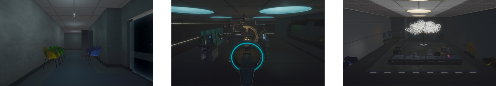Figure 4: the different scenes with different background sounds
I suggested the zombie robots and the logic was mainly implemented by Zhenyu Zhou. But we shared the same logic of implementing the AI of other characters.
Specifically, in the past, I used
Below is the logic of the AI agent of the craling rorbot, which was similarly implemented on the flyers.
publicCrawlStatesEnum characterState {//Return the state of the private enum on a get request get { return m_characterState; }set { StopAllCoroutines(); m_characterState = value; switch (m_characterState) { case CrawlStatesEnum.IDLE: StartCoroutine(IdleCoRoutine() ); break; case CrawlStatesEnum.FIND: StartCoroutine(CrawlCoRoutine() ); break; case CrawlStatesEnum.STOP: StartCoroutine(StopCoRoutine() ); break; } } }
Back to the implementation of the AI agent, it is oringinal for me to find it made by the
What's more, it is the fog that is also a new thing I havent utilized interms of making it dynamics in the game. As shown in the screenshot below, it is by setting fogDemsity to simply control this. Actually, we can get access to these funtions easily by searching for the attributes online and checking the API. Before I didnt make good use of the user API, but as I learnt much knowledge on this field, I could look through the API in a useful way.
Halfway through the game, the room releases flying robots which run out their limited energy and die in separate positions. The player can collect them thus supplying the energy. It is possible to look at reward systems either as a way to motivate players or as a way to soften the blow of disappointing outcomes (Wang &Sun, 2011) . Although the energy decreases constantly by time, the player can continuously look for these flyers as rewards. In this case, it is important for the player to make plans of choosing appropriate time to “digest” a flyer.
Yet, I do not name or define the way of collecting a flyer to add energy, whether by “killing”, “extracting” or “collecting”. It's possible that meaningfulness and pleasure in entertainment media exist on orthogonal scales. Hence, even if they could coexist, this connection and the intensity levels that correlate to each of them might be different (Bartsch & Oliver, 2017) . This is an undefined mechanic for the player to decide morally and emotionally, which avoid subjective meaningfulness that probably affects the game process.
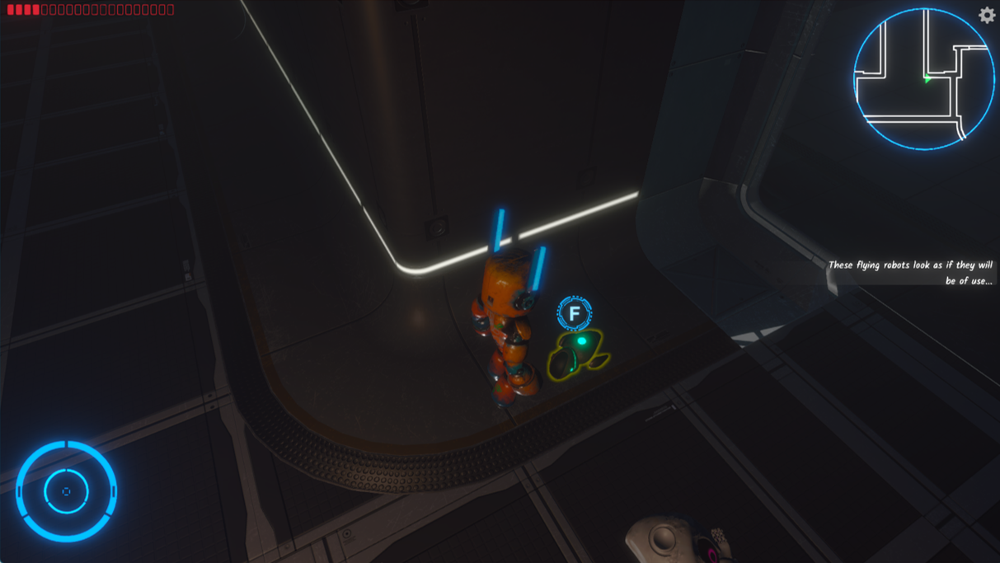Figure 1: the flyer runs out energy and can be collected to supply energy
This level has unique mechanism, which Iron uses to run the surgical lights. As shown in Figure 1, the joystick is located in the lower-right corner, with the light choices located in the upper-middle section, near to the reset button. Emotional and moral importance are entwined in the act of repairing and rescuing another robot. What's more, I reckon that as a result of the game's unique light rotation concept, the player has a good time.
Iron may be found in a room that is separate from where the console is located, implying that the Iron is a doctor who is in charge of the devices. Eudaimonic experience is generated by the appearance of personified behaviours in Iron, which indicate his character development.

Figure 1: use the joystick to operate the lamps
In making the operation mechanism, two main functions are achieved: the first is to confine the joystick to the direction range and separate the X axis from the Y axis. The second is to transfer the displacement of the joystick to the rotation of the operating stick.
Firstly, we have to choose a lamp, this can be made through the two lamp buttons which are demonstrated in the top of Figure. Here by choosing one lamp, the particle effects will show up , and the disk lighting will show the direction of the lamp. By adjusting the lamp rotaion, if the it is aimed at the chest, where there is for loading the sounder of the robot, then the lamp will stop, and the part can be installed into the robot successfully.

Figure 2: the demonstration of selecting lamps
As demonstrated in Figure 2, this is the final outcome of selecting.
//function of buttons on UI which are connected to the SurgeryController.cs OnPointerClick(lamp button) {//each button refers to a lamp SurgeryController =>SelectLamp(referred lamp) ; }OnPointerEnter(lamp button) { if (SurgeryController.m_selected != referred lamp)OnHover(); }OnPointerExit(lamp button) { if (SurgeryController.m_selected != referred lamp)OnDeSelect(); }
The logic of selecting lamp is a basic mutex selection problem, and writing this logic is useful for many things. My logic is as follows in
SelectLamp(lampbutton object) {//Firstly, check whether the parameter exists if(!lamp) return//Secondly, determine wthether an object has been selected if(m_selectd) {//Cancels the selection of the current lampbutton m_selected.OnDeSelect(); }//Thirdly, check wthether the selected object euqals the lampbutton parameter if(m_selectd==lampbutton) {//If selected is the lampbutton, it is a cancel of the operation m_selected.OnDeSelect(); m_selected = null;//surgicallamp is the lamp referred by the lampbutton m_surgicallamp = null; return; }//If selected is not the lampbutton, it is a switch of the operation lampbutton=>(lampclick.OnSelect()) m_selected=lampbutton; m_surgicallamp=lampbutton=>(lampclick.m_surgicallamp) }

Figure 3: the demonstration of selecting lamps
As demonstrated in Figure 3, this is the final outcome of clamping toggle within certain range and seperating X and Y axis.
To make the handle toggle move within the direction bar, I use
I used IDragHandler to implement the function.
OnBeginDrag(PointerEventData eventData) {//Firstly, when the drag begins, record the oringinal offset between mouse and the toggle. //It is very important that we need to convert the position of the mouse between world and screen. //eep z axis the same. z = Camera.WorldToScreenPoint(transform.position).z; orinMousPos = new Vector3(mousePos.x, mousePos.y, z); offset = transform.position - Camera.ScreenToWorldPoint(orinMousPos); }OnDrag(PointerEventData eventData) {//Before dragging, the first step is to decide the direction //Record the first movement of mouse and get a normalized vector thereby the direction ... dragMousPos = new Vector3(mousePos.x, mousePos.y, z); if (dragMousPos != orinMousPos) { Vector2 dir = (dragMousPos - orinMousPos).normalized; if (Mathf.Abs(dir.x) < Mathf.Abs(dir.y)) dragDir = vertical; } ...//Then, we only need to add the current movement with offset in order to move the toggle ...//Take vertical direction as an example dragDir->vertical dragMousPos = new Vector3(x, Input.mousePosition.y, z); dragMousPos=uiCamera.ScreenToWorldPoint(dragMousPos) + offset; ...//Finally, we can use the movement to control the lamps' rotation SurgeryController.DriveSurgicalLamp(0,y offset of Recttransform) ; }
Come back to
DriveSurgicalLamp(x, y) {//driveAmount is used as EulerAngles driveAmount=new Vector3(-y,0,x); }Update() { m_surgeryLamp.transform.Rotate(driveAmount*rotSpeed); }
In order to enhance the fun and interactivity of the game, I added some scene interactions in the subsequent production, such as benches that can be kicked away, cabinets that can be opened, and glass doors that can be broken. Many of these things do not affect the progress of the game, but they add to the atmosphere of the game, such as kicked over benches and disorderly visits, glass shards scattered on the ground and so on, which can heighten the sense of the hospital's waste.
To implement these mechanics,I added Rigidbody component to the chairs and it can be moved;About the cabinet, I didnt normally make an animation for opening the door. I rather used DOTween to implemented this by transform.DORotateY();About the split of the glasses, I used the Shatter Toolkit . And I add some specific sentences to change the material.

Figure 1: kick off the chairs

Figure 2: open the cabinet
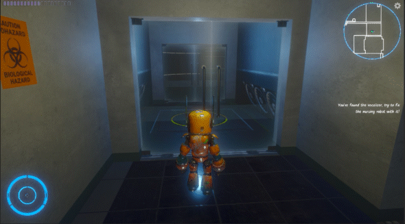
Figure 3: smash the glass door
The mechanism of opening the cabinet with the password is actually from Resident Evil 2, where you open the cabinet to get energy, but the key on the keyboard for entering the password is missing, so the key parts can be found somewhere else. After the button is installed, the player can input the corresponding password to get the energy clearance.
Zhenyu was responsible for the development of this part, and I mainly assisted him to integrate it into my code and the code developed.
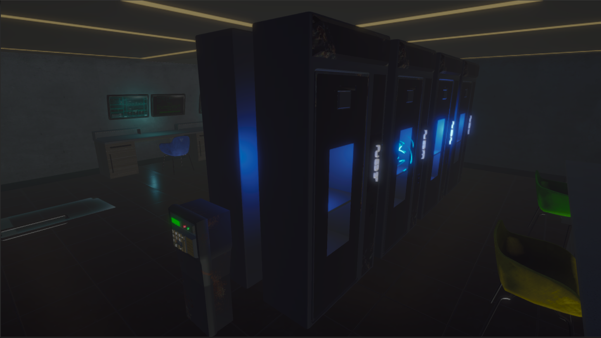Figure 1: the cabinets and the password machine
We embodied Iron's voice, which, in order to avoid gender bias, is not directly gender-specific. Because of our excellent voice actors, Xichu Shi and Yinyun Lin, the character of Iron is brought to life.
Dialogue is divided into monologues and dubbing. Identification is an important cornerstone for understanding game enjoyment (Hefner, Klimmt & Vorderer, 2007) . Soliloquy is very useful in enhancing the identity of the character. From the perspective of the player, I have clearly felt the importance of dubbing to the game experience in the later stage.
Zhenyu Zhou was responsible for the implementation of the dialogue system in the first level. The package of a dialogue system was quoted, which was very convenient to use. After configuration, you only need to use Ink to write the corresponding story.
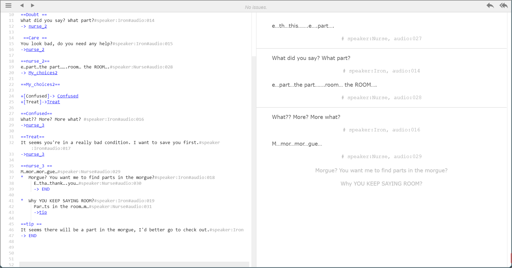Figure 3: a dialogue in the ink file
The suffixes #speaker:iron and # Audion :001 in Ink as shown in the Figure 3 are the implementation interfaces for some functions. Based on this, I made the dynamic avatar of the conversation and called the audio.
For a SCI - Fi scene, particle effects are certainly essential. In order to show the energy, I made a lot of light surround effects. For the operating table laser, I also made a laser-like effect like the one shown here.


Games today are almost inseparable from post-processing graphics. The graphics can be greatly improved with Unity's built-in Postprocess. As shown in the picture, the texture of the screen is very different before and after the post-processing effect is added.
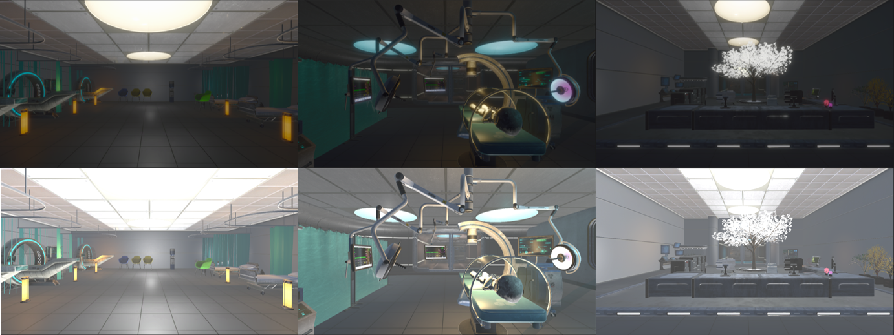Figure 1: postprocess on (top) and postprocess off (bottom)
Some scene optimizations were made, such as adjusting Threshold Intensity in Bloom of Volume and Scatter, adding Tonemapping, setting mode to neutral, and adding Vignette to soften the image. Finally, the color of the scene was corrected. Too many original lights led to some exposure, and then shadow was added to make the picture softer.
There is a big difference between how the scene looks in UE when it first loads and how it looks in UE even with postprocess. However, in order to fit the style of the scene, I optimized the screen performance by adjusting the volume component. Figure 2 shows the effect of simply opening postprocess. The exposure is too strong and the scene is too bright, which does not meet the setting of our abandoned hospital. As shown in Figure 3, the effect of Shadows Midtone Highlights was turned on, and the whole picture was darkened. Finally, through Color Adjustment, the exposure was adjusted to the most appropriate value, and the final picture performance was obtained.
In order to get proper effect, lighting is also very important. Spot light with matching color is added to each solid place of lighting. For example, I added many spot lights in the cabinet, orange lights in the warm lamp on the floor, and corresponding lights in the ceiling. In addition, Unity does not have its own mirror reflection. Usually, we can obtain a simple mirror effect by baking reflection probe, but it is still a static mirror reflection and cannot achieve the effect of UE. I adjusted the reflective property of the floor to weaken the effect of mirror reflection
Also, what I like most is our UI interface. Figure 7 shows the backpack. We designed this effect by ourselves. I realized such a smooth opening and closing effect by setting the animation and using code assistance. I did a simple calculation on the rotation to put everything in place. Figure 8 shows the effect of the map, mainly a shader with a dissolve edge, which is implemented using Unity's Fresnel Effect. The dissolve value can be adjusted according to the time in the code.

Figure 7: the open and close of bag

Figure 8: the dissolve effect of the map
Later, we all played through the game and found some bugs to correct. For example, in the story flow, if the player doesn't move forward before talking to Nurse Robot, it will cause the story to go wrong. This is due to my plottrigger setting, and I will limit it later.
Through the combination of theory and practice to develop such a game, IN this project, I want to create a real game experience, and explore the meaning of character Progression and its realization. I gained a lot in this project. here are still many parts which can be optimized and improved. With the limitation of time, some designed mechanics are not conducted.